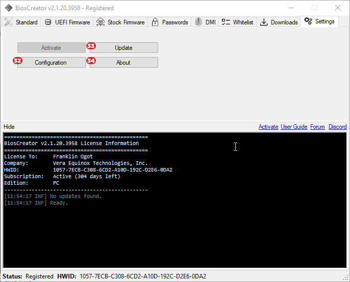
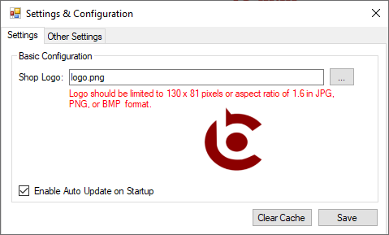
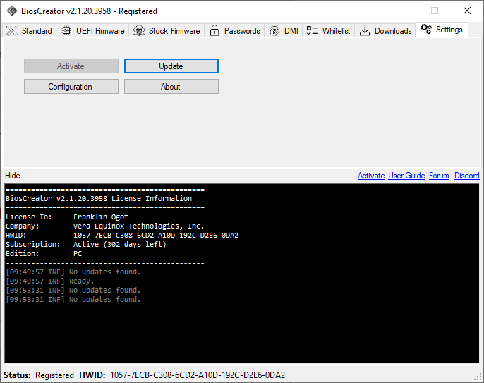

<style>
    .center {
        display: block;
        margin-left: auto;
        margin-right: auto;
        width: 50%;
      }

    a {
      text-decoration: none;
      display: inline-block;
      padding: 8px 16px;
    }
    
    a:hover {
      background-color: #ddd;
      color: black;
    }
    
    .previous {
      background-color: #f1f1f1;
      color: black;
    }
    
    .next {
      background-color: #160042;
      color: white;
    }
    </style>

<section class="support section bg-gray">
	<div class="container">
    <div class="container" style="text-align:justify; margin-bottom:50px;">
      <h4 class="join">Settings Tab</h4>
      <p>In this section has the tools for checking the validity, license, updates and some extra attachment for your BiosCreator.</p>
      
        <br>
      <h2>32. Configuration</h2>
      <p>If you wish to customize or add your shop logo, then use this feature.</p>
      
      <br>
      <h2>33. Update</h2>
      <p>This button helps you to check if there's update.</p>
      
      <br>
      <h2>34. About</h2>
      <p>This button helps you check your license status. License information is also displayed when you launch or start BiosCreator.</p>
      
      <br>
      
    <a href="{{ site.baseurl }}/bios-creator/stock-firmware-tools" class="previous">&laquo; Previous</a>
    <a href="{{ site.baseurl }}/bios-creator/dmi-tools" class="next">Next &raquo;</a>

		</div> <!-- End row -->
	</div> <!-- End container -->
</section> <!-- End section -->